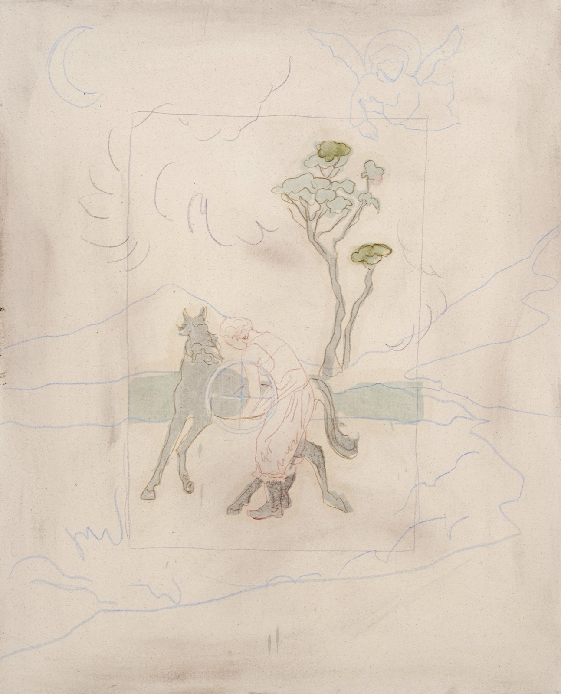
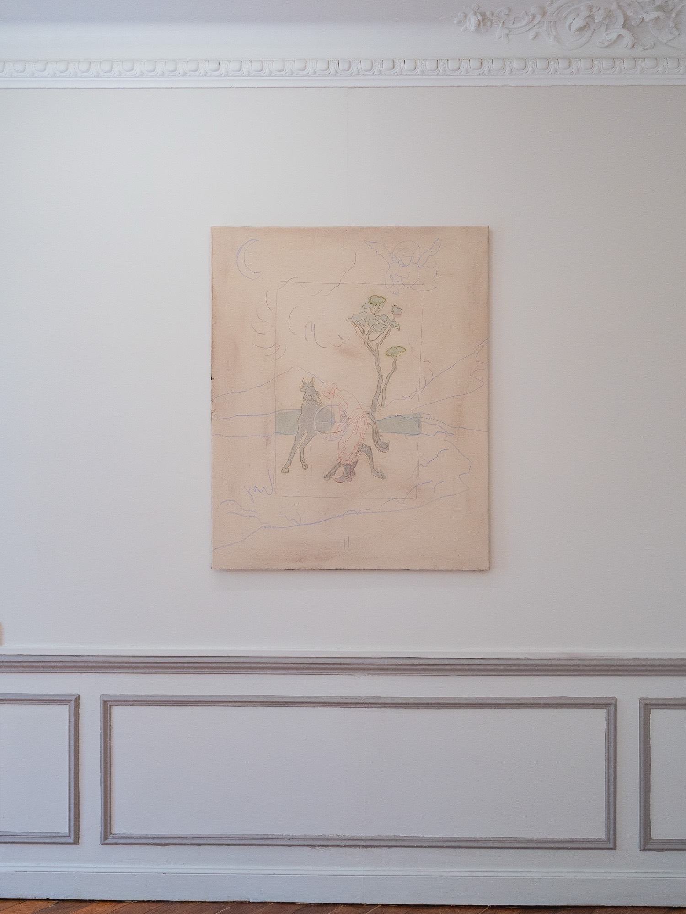
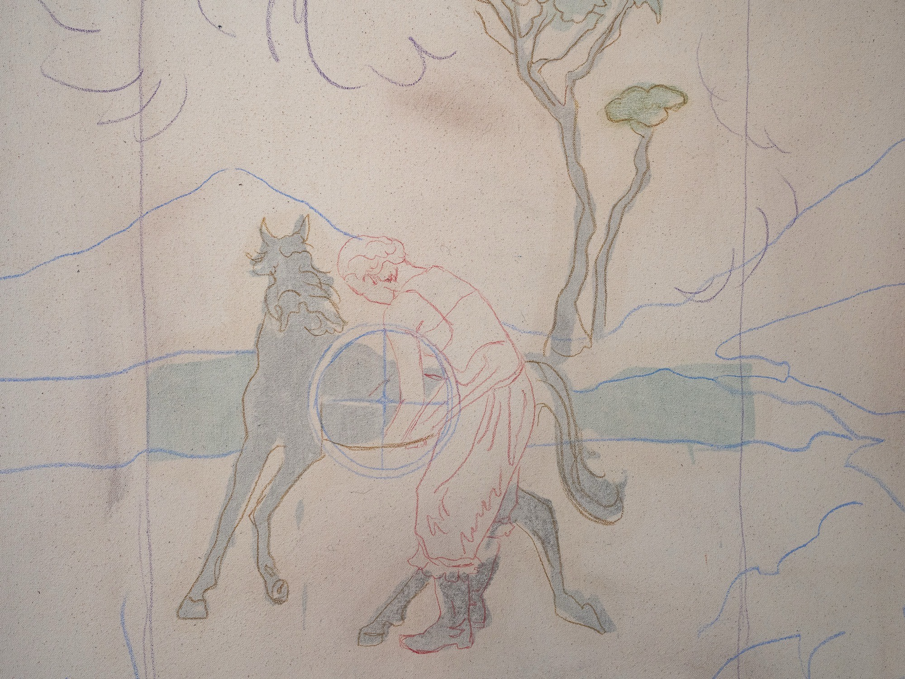
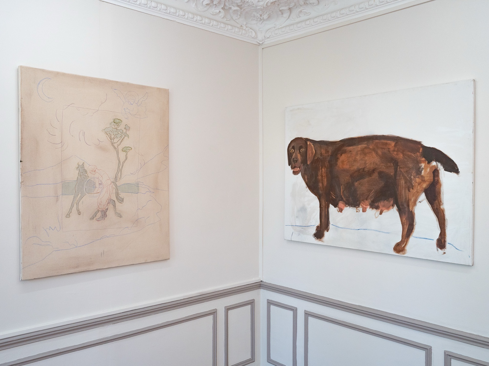
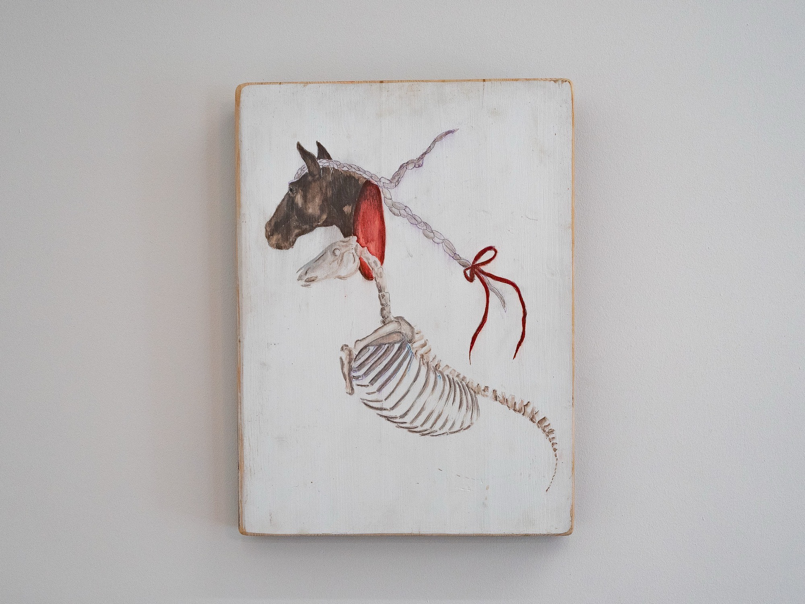
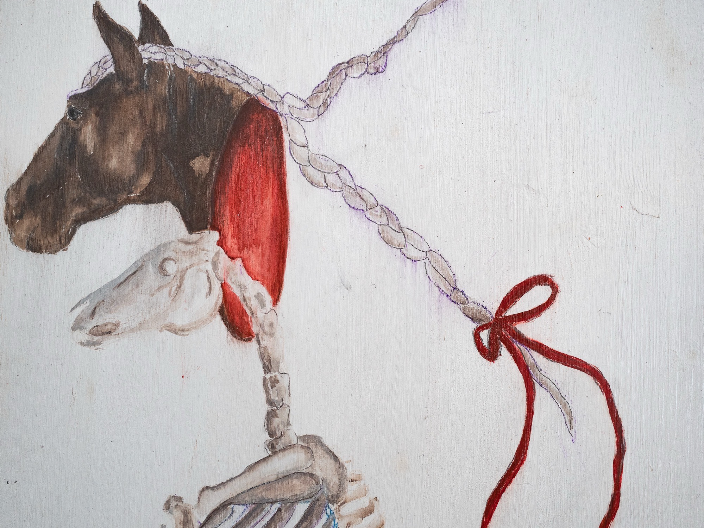
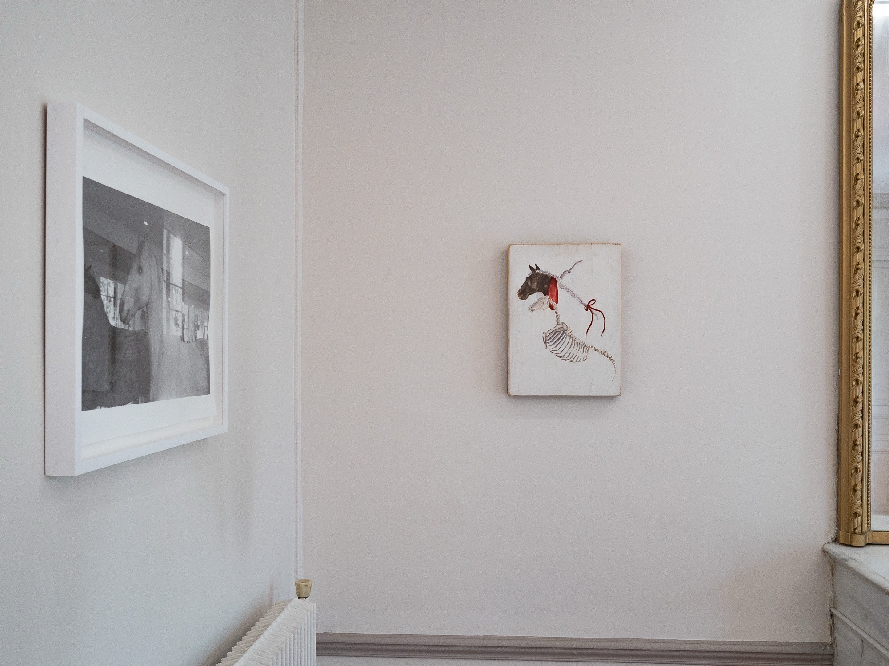

Tekla Kighuradze
Entrée 010 · La Bride
Œuvres — 2 entrées

Tekla Kighuradze, A Loaded Gun, 2024. Technique mixte sur toile, 90 × 110 × 3 cm. Courtoisie de l'artiste.

Tekla Kighuradze, A Loaded Gun, 2024. Technique mixte sur toile, 90 × 110 × 3 cm. Courtoisie de l'artiste. Kramer.

Tekla Kighuradze, A Loaded Gun (détail), 2024. Technique mixte sur toile, 90 × 110 × 3 cm. Courtoisie de l'artiste. Kramer.
Demander la fiche →
«La Bride», vue d'installation, KRAMER, Paris, 2026. Photo : Kramer.

Tekla Kighuradze, Disappear / Appear, 2024. Technique mixte, bois, 30 × 40 × 5 cm. Courtoisie de l'artiste. Kramer.

Tekla Kighuradze, Disappear / Appear (détail), 2024. Technique mixte, bois, 30 × 40 × 5 cm. Courtoisie de l'artiste. Kramer.
Demander la fiche →
«La Bride», vue d'installation, KRAMER, Paris, 2026. Photo : Kramer.